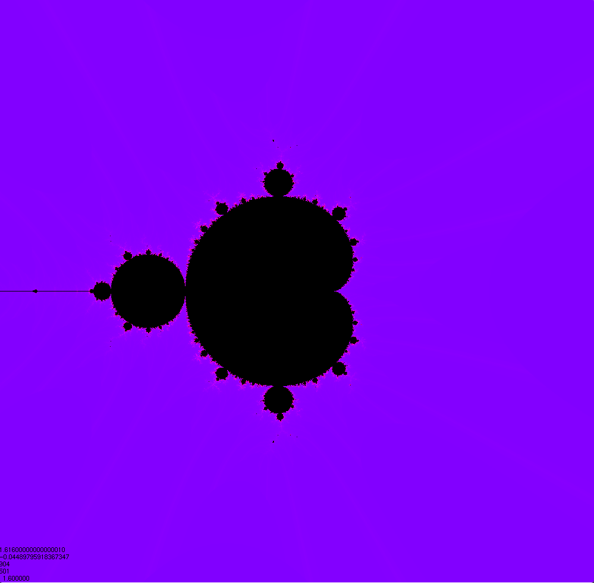

Projects

Fractal Viewer
Most of the projects to my name are currently personal and thus relatively small in both scale and scope. One of my more polished small projects is a fractal viewer, allowing a user to zoom in on the famous Mandelbrot Set. This project was done in a couple hundred lines of C code, and was a good excuse to learn a great many things, from OpenGL to complex numbers in code to even CUDA to enable my GPU to do highly paralellizable work.
Chat Client
A small project of mine for a while was a chat client, done in Java for both the server and client. The main desire was to see how feasbile an alternative to a webapp-based application was. I'd say from what I experienced, with some elbow grease and a strong desire to see it through, it would be possible, however I lacked both of those, and as such it has been shelved for now.
Hotel Management Software
A slightly larger project for COMS 3620. It required collaboration with four other people, and was mainly used as a tool to help us learn design patterns, principles of design, and how to work as a team for code projects. This was where I learned to use Git.
Smartcheck.sh
This (currently) small project was done for one specific purpose at the Surplus: to gather the SMART data off of hard drives so we could gauge how "healthy" they still were. Initially just meant to scrape useful data from SAS hard drives, it quickly grew into a tool to scan most hard drives we could throw through it. This project is currently done with a Bash script.